Overview
At Gojek, I was responsible for designing consumer advertising experiences across Southeast Asia's super-app ecosystem, working at a scale of ~30 million monthly active users across Indonesia and Vietnam. My work drove $5M USD in additional revenue while maintaining user experience at the forefront.
I collaborated with cross-functional teams spanning business, product, engineering, ad sales, and creative - often across India, Indonesia, Singapore, and Vietnam. My role required balancing merchant ROI, user experience, platform scalability, and rapid experimentation.
This case study covers three major projects:
- Ads Design System: Creating a unified component library and visual principles for all 3rd party advertising on Gojek, reducing launch time from weeks to days.
- Masthead Ads: Fighting for a seat at the table in GoFood's redesign, then creating the platform's most successful premium ad format that delivered 4.5x ROAS for merchants.
- Banner CTR Experiment: Using multivariate testing and automation to achieve 60% uplift in ad click-through rates for GoFood merchants.
Building a Scalable Ads System
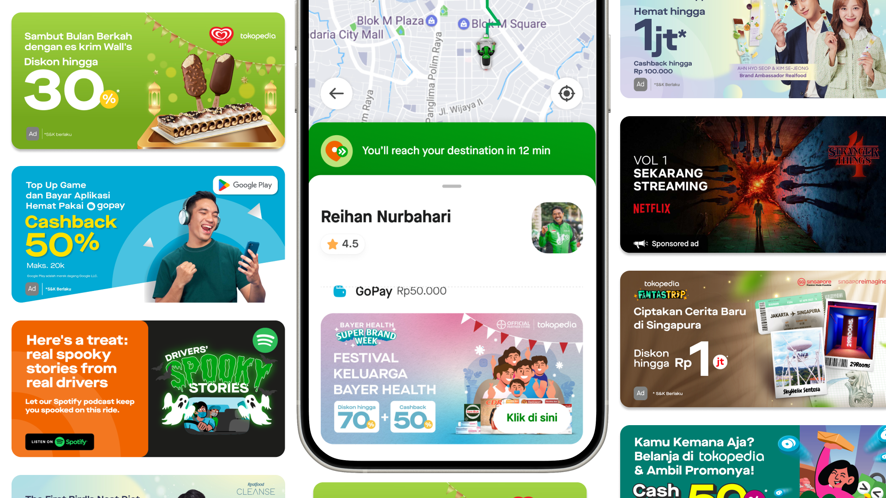
Co-ordinated multiple teams of business, IxD, copywriters, publishers, and creative designers to create a component library and common set of visual principles for all 3rd party advertising on Gojek.
The Problem: Long timeline to introduce ads
When I joined, ad inventory setup was slow, chaotic and ad hoc. We had been running ads for a few months, but different Gojek products had different UI components & different content guidelines.
1 week
Sales / acquisition
2 weeks
Engineering effort
1 week
Data / reporting
Questions with no clear answers:
- What component to use for the ad?
- What content / copy is permissible?
- What should the behaviour of the ad be?
- How does the merchant / brand create the ad from scratch?
Our vision for ads on Gojek
From a UX point of view ,we wanted ads to become a core part of the Gojek user experience as well as a driver of business both on and off Gojek. For starters, Ads should appear the same way and be consistent throughout Gojek's ecosystem of services. But there was more to it on that. In an internal workshop of the design team, we aligned on 3 principles that became the core of ads in Gojek that are followed even today
Effective
Ads on Gojek should add value to a user's journey and job to be done while using a Gojek service
Honest
Ads on Gojek should clearly communicate the value proposition and additional actions needed to access it
Delightful
Ads on Gojek should contribute to the customer's enjoyment & satisfaction of using Gojek's services
Ads on Gojek should contain content the user is not aware of but would be delighted to explore, and be relevant to their needs either via superior targeting, or appropriate placement in the user journey.
My job was to turn that vision into a system for consumer ads.
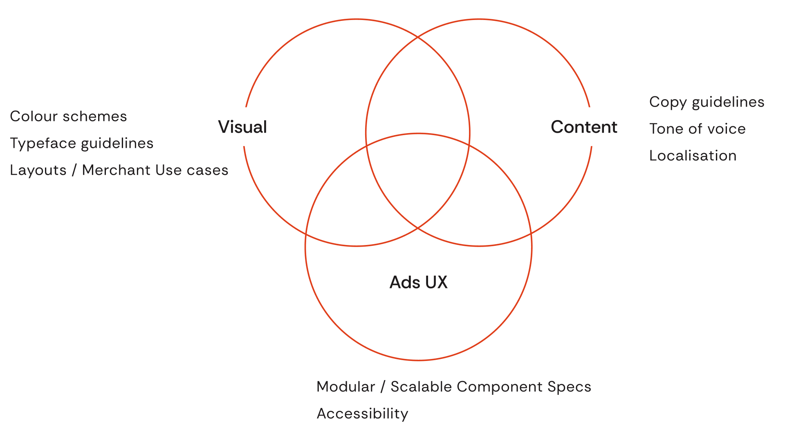
The vision: Ads as a core part of the Gojek experience
Unique challenges
Cross-cultural stakeholders
Different teams distributed across India, Indonesia, Singapore, Vietnam
Complexity
Gojek is a massive product - ride hailing, food delivery, payments and much more. Approaches to deal with one team wouldn't work with the other.
Nuance
Each ads surface had different user contexts and merchant ROI expectations.
Scalability
I was designing at a country scale of roughly ~30 million MAUs in Indonesia / Vietnam
My role as Product Designer
To co-ordinate towards the desired outcome, and focus on the problem statement:
🤝 Stakeholder management
Define briefs for design specialists working on the project, manage feedback from biz / product / engg
✨ Ensure quality
Ensure the outcomes of the project remain true to Gojek standards (accessibility, interface quality etc)
🗣️ Maintain SOT & evangelise
Once the system is created, maintain documentation, use it in projects, share it internally for other designers to use
Process
First step: Audited Gojek App
Defined outlines of system to work on by conducting a comprehensive audit of existing ad placements across the Gojek ecosystem.
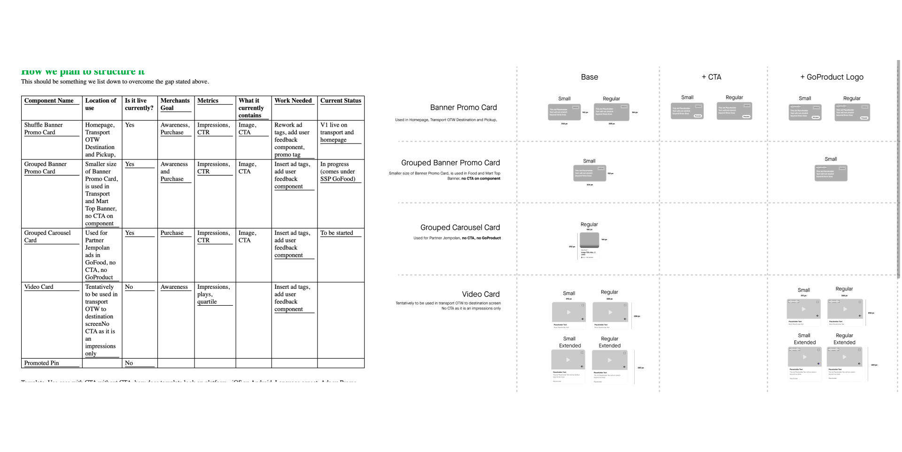
Comprehensive audit of existing ad placements
Second step: Created UI component library
Created brief for IxD designers and iterated on UI with them to establish reusable, modular components.
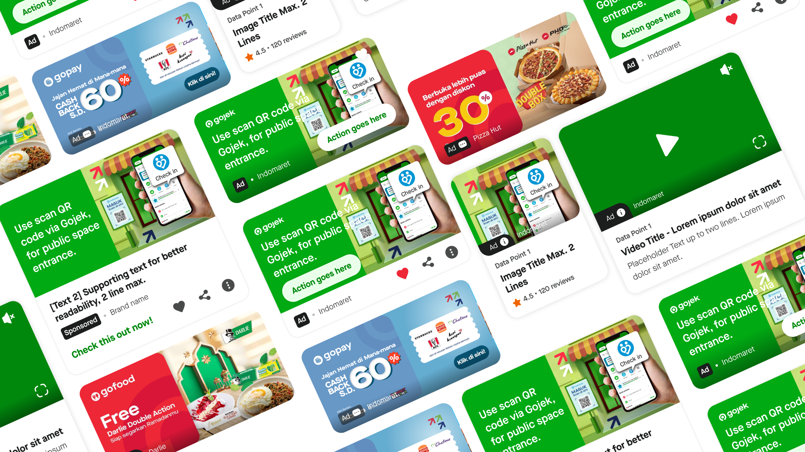
UI iterations - we had to think about a lot of things like controls, ad tags etc.
Third step: Content guidelines & competitive research
Collaborated with creative designers on content guidelines and use cases. Conducted competitive research and worked with UX writers to define copy principles.
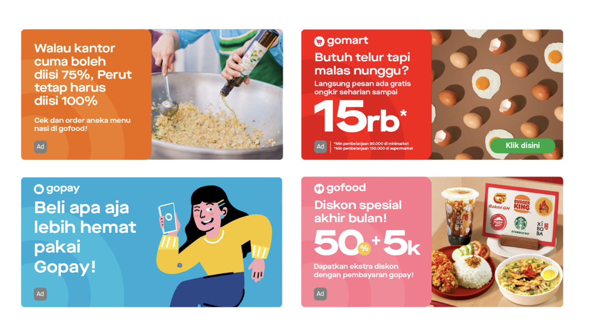
Content guidelines and use cases for ads
Final step: Rollout & documentation
Rolled out system inside consumer app, maintained source of truth and documentation for devs & other designers.
I also prototyped and tested user feedback and reporting mechanisms in the Gojek consumer app so users had more control over their ads experience.
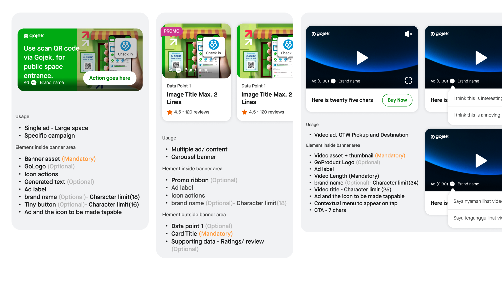
a peek at the final modular UI components for consistent ad experiences that I maintained as a library for me and other designers to use
Impact & Outcomes
Weeks → Days
Reduced launch time
~3 days
To onboard new ad format
Higher ROAS
For merchants & brands
What happened?
😍 Benefits to Users
Consistent, easy to understand ads experience across Gojek
🤓 Benefits to Engg / Product
Easily onboard ad formats with minimum design/dev effort (~3 days of effort). No need for dedicated product designer for every new ad inventory.
🤑 Benefits to Merchants
Defined templates and behaviours for ads to make it easier for them to create and run
💼 Benefits to Gojek
Reusable templates and copy guidelines meant faster time to live for ad campaigns. Easier to scale ads on different surfaces / touchpoints of the consumer app.
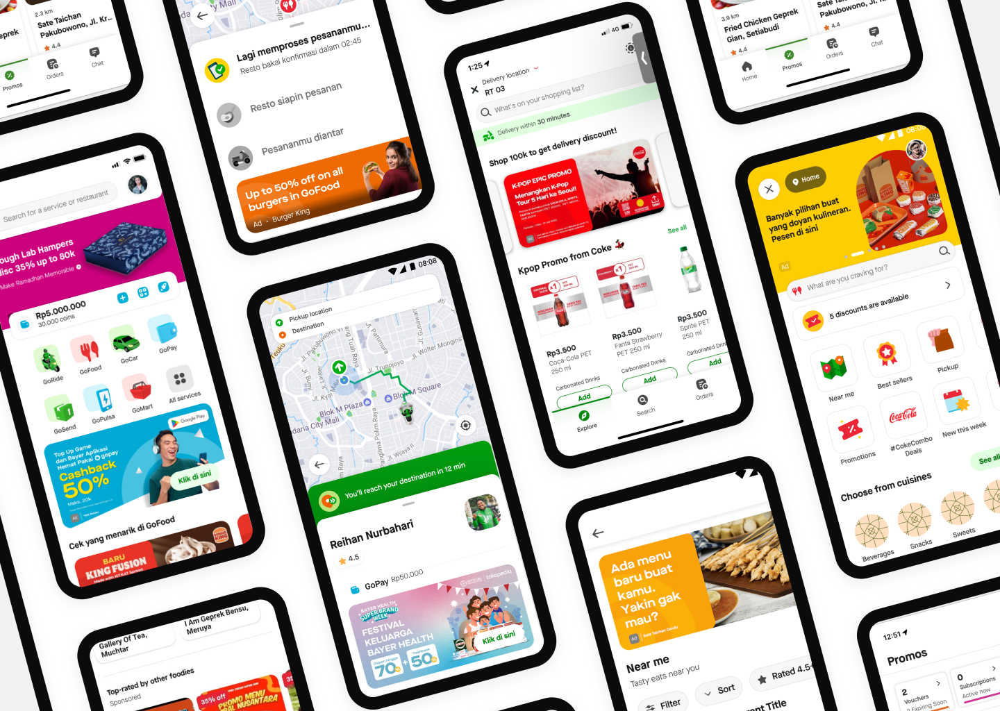
The ads system in use across Gojek's product ecosystem
Masthead Ads: Fighting for a Seat at the Table
How we embedded ads into GoFood's $16M redesign and created the platform's most successful ad format
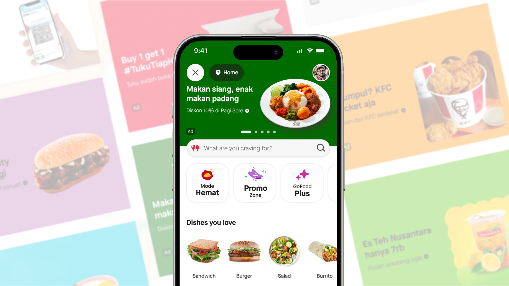
The Problem: We weren't invited
In late 2022, GoFood was undergoing a complete redesign. This was a massive initiative - GoFood generated the majority of Gojek's revenue. But here's the problem: the ads team, responsible for $11.3 million in revenue, wasn't included in the redesign.
We were literally going to be an afterthought.
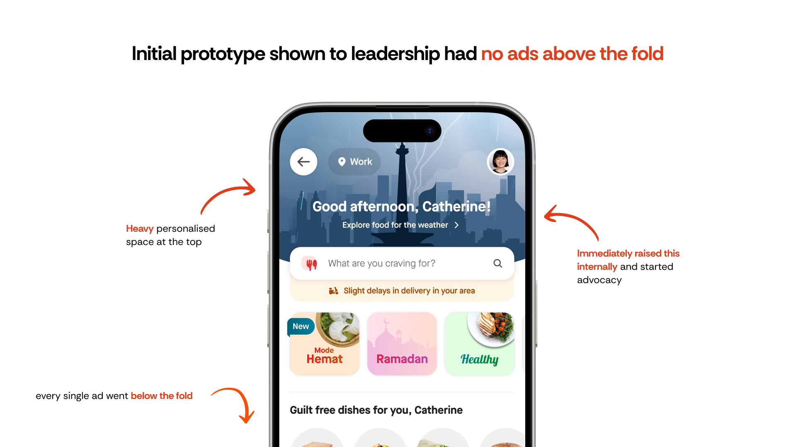
"I couldn't let ads become a band-aid on a redesigned product."
The existing state was broken
- Banner ads occupied prime real estate but had low engagement
- Overload of information and busy design compromised readability and perceived value
- Users didn't consider carousel banners to be useful and often skipped them
- Too many banners, often considered irrelevant and not personalised, leading to banner blindness

Before: Banner blindness and poor engagement
The Fight: Writing our way in
So my fellow designer Shreya (my counterpart on merchant tooling) and I wrote a strategic document - 'Principles for embedding APP inside GoFood ads.' We didn't wait for permission. We wrote it, aligned it with Maji, our design manager, and presented it directly to Julee, the GoFood VP.
Three strategic principles
1. Revenue Continuity
How do we ensure new ad formats don't lead to negative business outcomes?- Earlier forecasting on ad inventories to ensure BAU revenue baseline
- Go-to-market strategy with transitionary phases (start selling new format before launch)
- Bouncing back from failures - multiple rollout scenarios prepared
2. Systemic Approach
Ads exist as part of a larger ecosystem. How do we manage that experience?- Cater for real demand - More complex ad formats require deeper investment from advertisers
- Ads are not limited to GoFood - Unifying principles across Gojek app (Transport, Logistics, etc.)
- Accommodate merchants & internal Gojek needs - Ensure consistency across ecosystem
3. Scope of Expansion
Balance building new vs optimising existing formats- Accommodate existing design goals while being open to rapid experimentation
- Robust governance to dictate which content goes where, how, and when
- Maintain integrity of overall GoFood consumer experience
The document worked.
We got embedded in the redesign with clear responsibilities through the DARCI model. We secured 70% capacity allocation for our designers. This wasn't given to us - we fought for it by showing the revenue risk.
"Because we got involved early, ads weren't retrofitted - they were native to the new experience. We protected the $16 million revenue stream and set a precedent that ads must be considered in every major product decision."

The strategic document that secured our seat at the table
Managing the chaos: Stakeholder alignment
Getting embedded was just the start. I had to align with business about relevancy metrics, with designers about which touchpoints we'd own. Each conversation required different framing - revenue for business, user experience for product, technical feasibility for engineering.
Ads Stakeholders
- Ads PMs & Biz teams
- Ad Sales
- My design manager
- Senior designers, UXW, UXR
GoFood Stakeholders
- Food VP Business & Product
- Food PMs & EMs
- VP Design
- Design leads & managers, Design PgM
Aligning goals across teams
GoFood's Goal
Show users food content as early as possible to trigger cravings leading to improved engagement and transactions. Make users transact via non-search flows when there is a clear intent.
Ads Team's Goal
Improved clarity and readability of ad assets to aid in user decision making on purchase. Increase ad revenue and ROAS for merchant and brand partners.
The Solution: Masthead Ads
We designed a premium ad format that would solve the banner blindness problem while respecting user experience.

Design principles for Masthead
Clear & Concise
Keep text minimal and impactful
Rich Visuals
High-quality images, colors, fonts + engaging media formats
Relevant & Targeted
Show banners specific to target audience segments
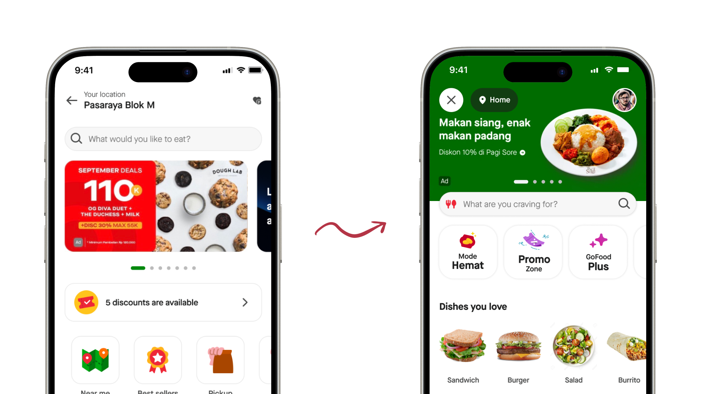
Before and After: From banner blindness to premium ad experience
Early prototypes to make the case
I quickly mocked up prototypes to share with leaders to make the case for a new ad inventory. The goal was to show, not tell.
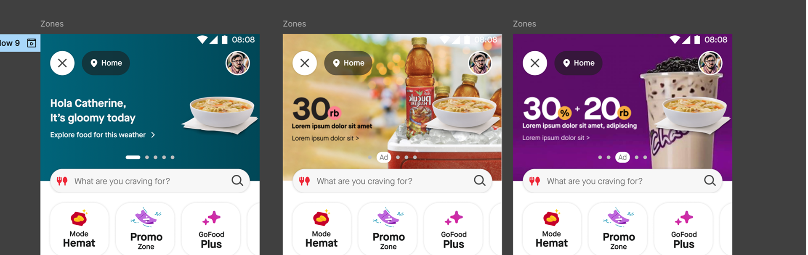
Quick prototypes to get leadership buy-in. Note how I am exploring "ad" as a part of the nav metadata. In the end we couldn't build it due to design system tech feasability issues. But I was always wondering why can't nav show what type of content it is
The hard part: Making it scalable
As I iterated on UI, challenges emerged:
- Merchants had near-infinite requirements
- Guidelines had to work in both Indonesia & Vietnam
- Had to preserve the "wow factor" while being systematic

Iterations started to get messy, as I realised we needed a system to capture all merchant use cases
Scoping merchant & brand use cases
Worked with PM, biz and ad sales to consolidate Merchant / Brand jobs-to-be-done and define:
- Slot structure for different use cases
- CPM model that worked for various advertiser sizes
- Use case taxonomy (brand awareness, promotions, new launches, etc.)

Mapping merchant and brand jobs-to-be-done
Creating visual & copy guidelines
Worked with Creative Design + UXW on copy and design rules that could:
- Encompass all merchant/brand JTBDs
- Stay cohesive with Gojek branding
- Be internationalisable (Indonesia & Vietnam)
- Maintain quality standards at scale

Iterating on guidelines that balance flexibility and quality
Rollout & governance
Rollout meant debugging, working with devs and biz, handling device-specific edge cases. But the real work started after launch.
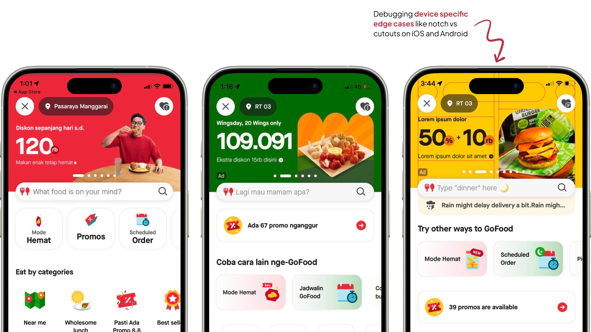
We debugged on test devices and alpha builds to ensure visbility across devices and screen sizes. The real challenge was a consistent view experience across Android, which had a lot of manufacturers with different specs for notch, cutouts etc.
Masthead ad governance
Merchants would come back to us with feedback and requests. I had to create a workflow to implement changes in the ad sales & design process:
- Process to take in feedback from merchants and ad sales
- Review mechanism with design, product, and business
- Update and version Masthead guidelines
- Communicate changes back to all stakeholders

Feedback and governance workflow for continuous improvement. We started getting actionable merchant feedback almost immediately and it helped us prioritise and act on issues
Impact in GoFood
21%
Increase in banner CTR
2x
Increase in CTB rate (click to buy)
3mn
USD Incremental revenue
2x → 4.5x
ROAS for merchants driven by improved creative, messaging and readability
Most successful ad inventory - Masthead became the most successful ad format and was rolled out across the entire Gojek consumer app, not just GoFood.
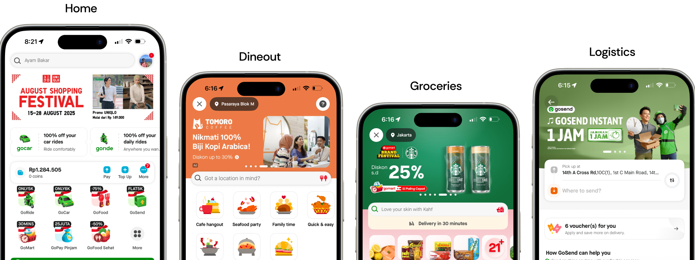
Masthead ads rolled out across Gojek app
What I wanted to do next
Success doesn't mean we were done. I had a roadmap of improvements:
UI only goes so far
Most gains came from personalisation and targeting, not just visual design. I explored how Masthead could integrate into offline and social media channels to create a cohesive brand experience.
Technical constraints we hit
- Limited to 3rd party PNGs due to tech maturity constraints - harder to customise and A/B test variations
- Image only - no support for voiceover or video
- Accessibility gaps - Carousel is an inaccessible format. Wanted to add accessibility in ads creation tools and at design system level
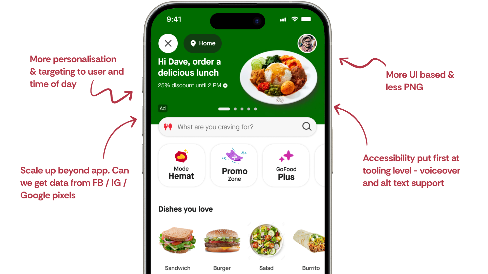
Roadmap for future improvements
What did I learn?
- How to present to big decision makers and get people on board with a vision
- When to step up - sometimes you don't wait for permission, you make the case
- When to bring others along - collaboration across teams is what makes systemic change stick
- Strategic thinking matters - The document we wrote wasn't just design work, it was business strategy
Banner CTR Experiment: 60% Uplift
Using automation tools and code-based methods to improve ad performance for GoFood merchants

What's the problem?
We make about $100k+ USD per month from thousands of self-serve merchants who run banner ads on GoFood.
Self-serve banners creation (legacy process) were inflexible PNGs super-imposed on top of each other that merchants would choose. We'd noticed less customer engagement with self-serve banners vs. sales-assisted banners (more customizable). As a result, merchants would churn and not renew.

Sales-assisted banners (left) vs Self-serve banners (right)
~1-2%
Sales Assisted CTR
0.05-0.1%
Self Serve CTR
Why didn't users click on banner ads?
Comparing sales-assisted vs self-serve banners, we identified key differences:
- Image quality seen as proxy for food quality - Self-serve banners had lower quality images
- Promo information - Users look at details on discounts/cashback etc
- Credibility - Users look for signals like reviews, ratings, to make a decision to order something new

User behaviour creates a vicious cycle
- Discovery stage: User views self-serve banner on the GoFood app
- Consideration stage: Is the banner relevant to what I want to eat? Does it contain information I care about? (promo/discount/rating)
- Decision stage: User ignores banner due to lack of relevance (targeting/algo issue) or lack of information (design issue)
- Low return on ad spend: Merchant spends money to run the banner but doesn't see a return. Merchant pulls the ad.
- Vicious cycle: Fewer merchants run ads, meaning fewer users are shown banners on the app and banners are less relevant
User Research
Card sorting with customer panel

We wanted to get a prioritisation of what customers cared about (carried out in collaboration with UXR team). Key findings:
- Promo details were the #1 factor in click decisions
- Ratings/reviews provided social proof and credibility
- Image quality was seen as a proxy for food quality
- Restaurant name helped with recognition and trust
Exploring solutions and building the case
I worked with PM and the data team to brainstorm and explore numerous ideas to solve the low CTR problem. This included competitor research with Grab and Foodpanda to understand what was working in the market.
The vision: Contextual & personalized banners

My hypothesis was that by making banners contextual to user preferences and behaviour, we could significantly improve ad relevance and CTR. The ideal future state would include:
- Personalized SKU discounts - Banners showing discounts for categories users have ordered before
- Social proof - User-generated content and popularity signals ("2,000+ people ordered this today") to tap into the hive mind effect
- Behavioral targeting - Reducing friction in decision-making by showing relevant offers at the right time
"This was the idealized vision - what we could eventually achieve. Some ideas required tech and data infrastructure we didn't have yet. But I presented them as possibilities to plant seeds for the future, while focusing the immediate experiment on what we could realistically build and test."
After presenting these ideas to product and design leadership, we got the green light to move forward. With bandwidth and alignment secured, we scoped an experiment we could execute immediately while keeping the longer-term vision in mind.

Prioritising which data points to test based on feasability. Data points that stayed the same for most users were prioritised
We defined our hypothesis and end state
Hypothesis: If our banners contain the data points that are relevant to our customers' purchase intent then we will see an increase in click through rate on banners
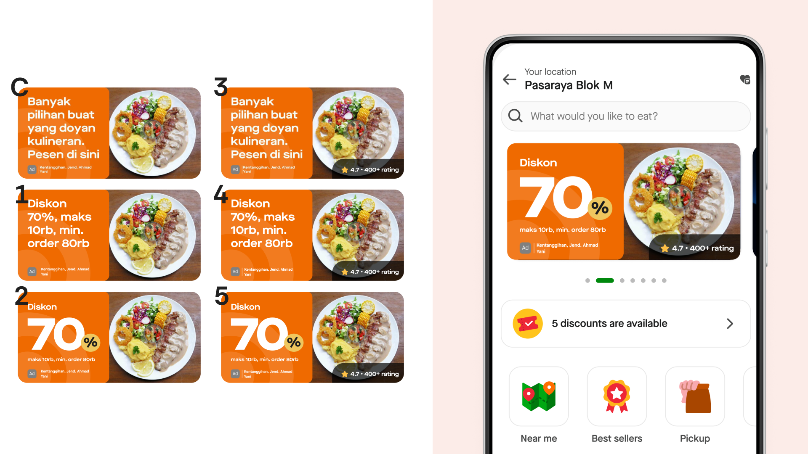
Data points chosen
- Discount amount details - Showing specific promo values
- Restaurant rating - Adding social proof and credibility
- Design changes to emphasise promo - Visual hierarchy improvements
Turning qual insight into measurable metrics
Key questions we had to answer:
- How do you turn qual insight into a measurable metric?
- How do you draw a relationship between a point of information on the banner, versus the actual user behaviour that it causes?
Multivariate testing approach chosen: Same core mechanism as A/B testing, but compares a higher number of variables, and reveals more information about how these variables interact with one another.
Experiment treatments
Worked with PM, Data Science and engineering to define experiment hypothesis and parameters. We designed 6 treatments to test different combinations:
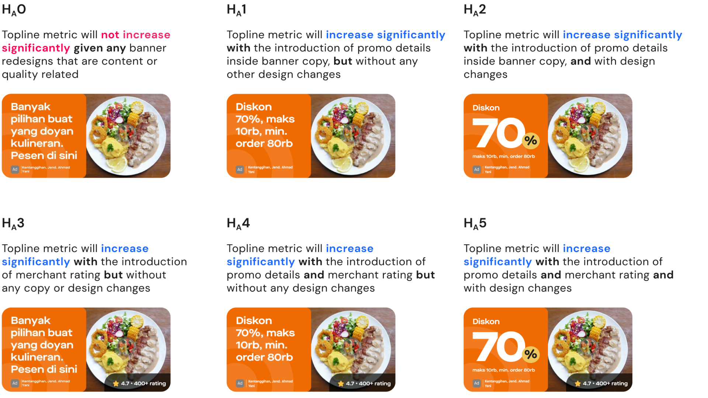
All 6 treatments tested in the multivariate experiment
How do we put this into production?
For the experiment to be statistically significant, there must be a minimum number of daily users it had to reach.
Scale: Total: 6 banners × 2 merchants × 10 cities = 120 banners
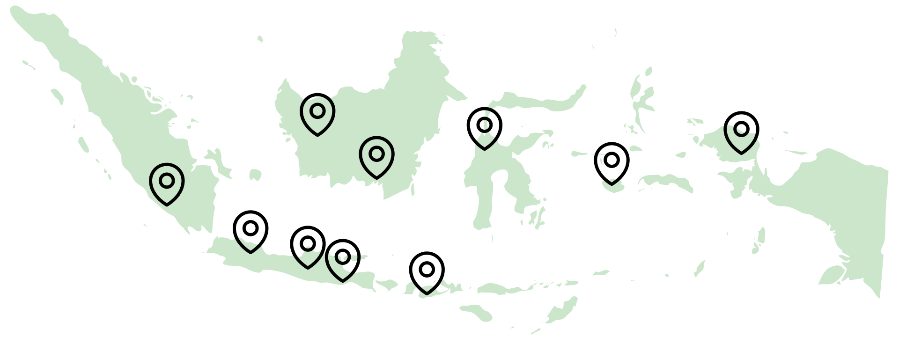
Process:
- Worked with PM and Biz team to get data points
- Created a spreadsheet and broke down image parameters (merchant name, rating, image URL) for each merchant × treatment
- Evaluated and used a plugin to auto-generate the banners
- Transformed the data into a CSV that was parse-able by the plugin to generate the banners
This automation approach saved weeks of manual design work and ensured consistency across all 120 banner variations.
Figma plugin workflow for automated banner generation (click to play)
Experiment Results
Treatment 2 and Treatment 5 emerged as winners of the experiment. This meant that our hypothesis of showcasing discunt amount details and information hierarchy improvements were validated.
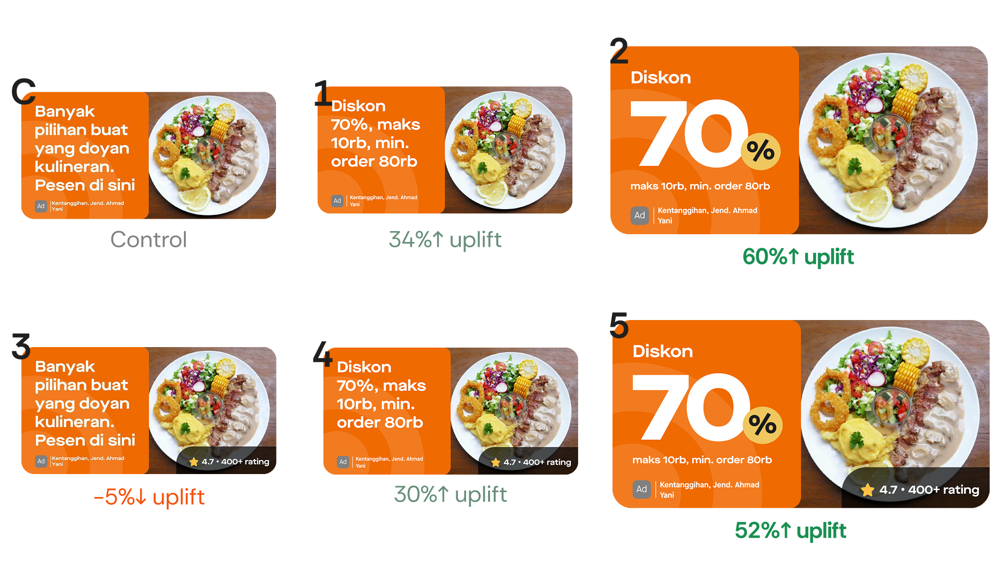
Counter-intuitive insight
We had some hypotheses around this. Rating affected CTR only when the rating was good. This led to some ethical questions:
- Do we show rating if rating is low?
- Do we optimise for click through rate or user satisfaction?
- What are other data points we can show that provide social proof and credibility apart from rating?
New challenge - developer collaboration
Prior merchant ad solution was built as an MVP with limited functionality. Now the solution had to change to include additional data points as per experiment results.
It was becoming a bit complex to communicate everything as a PRD. So I thought: what can I do as a designer to shorten this process?
Solution: Code-based proof of concept
I created a code-based proof of concept for the engineering team, using internal APIs to demonstrate how the component could work and collaborated as they built it in terms of high-fidelity specs and visual QA.
Code-based prototype showing component implementation (click to play)
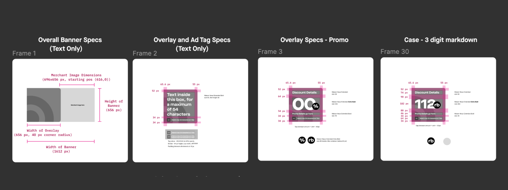
Sneak peek of UI specs for dev
Impact
60%
Uplift in ads CTR
100%
Scaled to all merchants
92%
YoY increase in ad revenue
- Project and methods received great feedback from cross-functional peers
- Presented case study at design all hands to team & leadership
- New ad format scaled up to 100% merchants and customers
- Increased merchant signup and retention contributed to 92% increase in advertising revenue in 2024
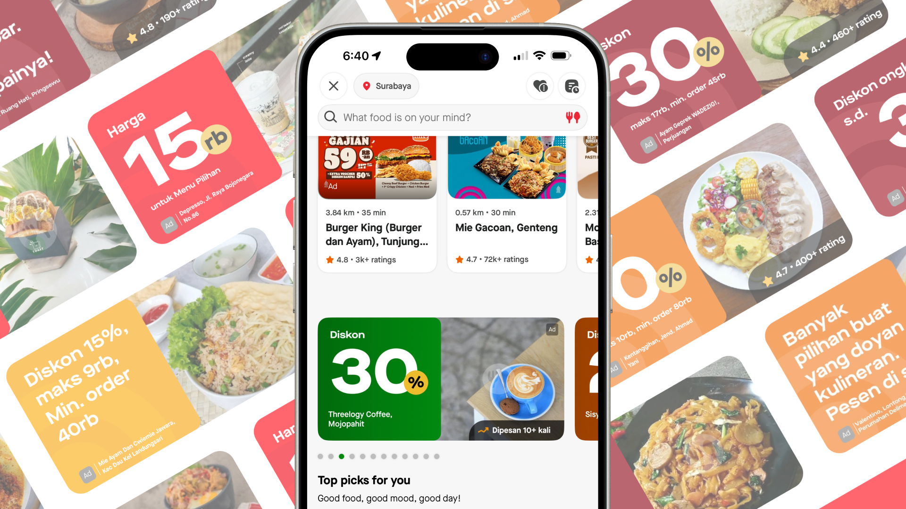
We kept iterating and found other data points beyond rating that provided social proof. In this case, we used "Ordered x times by people near you" to build credibility and drive engagement.
Learnings and next steps
"Tools complement, not substitute well-defined hypothesis and rigorous thinking. In setting up an experiment, you need to account for not just what you want to find, but how you will go about finding it. The work is never done."
Addressing patchy merchant image quality
Even though we increased merchant participation, we created a new problem: image quality was still inconsistent. How do we curate at scale? We still haven't cracked this.
We had some vision for how to solve it. We realized we needed to give merchants feedback in their campaign reports - showing them when poor image quality was leading to bad engagement. That became the next problem we were supposed to solve... but it hasn't been solved since I left Gojek!
Creating a better framework for personalisation & performance

My vision was for banner ads to no longer be PNGs but UI overlays on high-quality merchant images, where copy could be tailored to user personas:
- Social proof for people who need validation
- Discounts for discount hunters
- Ratings for foodies
It would be dynamic and more in line with state-of-the-art advertising that Meta and Google could offer. Of course, we couldn't get there during my time, but that's the vision I drove in the GoFood redesign - planting seeds for the future.